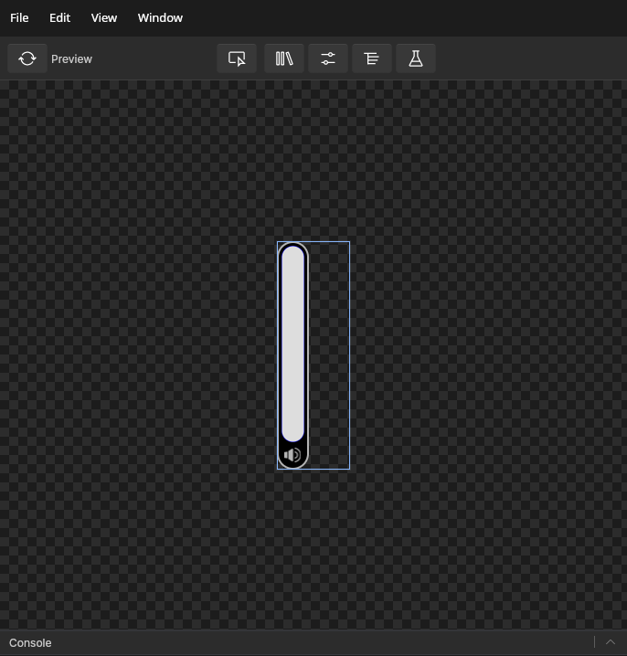
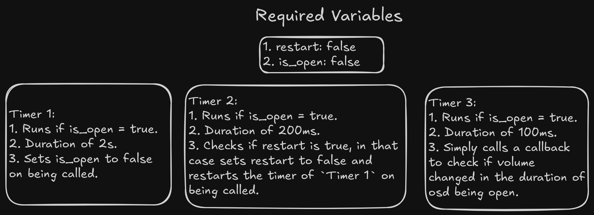

public:: true
tags:: tutorial
description:: Make your first widget with spell and slint for desktop linux.
lang:: rust, slint
#Blog Posts
In this tutorial, we would be doing following steps.
Setting up a spell project.
logseq.order-list-type:: number
Creating UI of slider and osd with Slint.
logseq.order-list-type:: number
Handling backend logic with rust.
logseq.order-list-type:: number
Enhancing the code with addition of mute behaviour.
logseq.order-list-type:: number
Updating the settings for compositor(Niri and Hyprland).
logseq.order-list-type:: number
Future work and Conclusion.
logseq.order-list-type:: number
By the end of this tutorial, you will be capable of making your own widgets in spell and slint with much ease.
Introduction
So, sit back, grab your keyboard, your beautiful machine,open your favourite IDE and get ready to make some beautiful widgets with Spell and Slint. But what are we making today?
Let's create a Volume OSD. On Screen Display is a small widget which shows up indicating the change system property. For example when one change its volume and brightness, a widget pops up to show the change. By the end of this blog, the objective is to create a functioning volume OSD paired with my compositor settings.
Final Look
At the end, you will get the following widget.
Setup
Before starting, make sure you have rust, clippy and cargo installed. Moreover, you can also install slint-lsp for your IDE for getting suggestions when writing slint. The tutorial doesn't expect any previous knowledge with slint, though you may find it more intuitive if you have written any other declarative language. Basic knowledge of commands and rust is expected. I will try my best to keep things simple.
So, let's start a new rust project with command cargo new osd. I have named the project "osd" but you can write whatever you want. This will create a directory in your present working directory with git initialised and appropriate rust project setup.
Let's go ahead and run the following command to do the basic setup.
# Change into the project.cd osd
# Create a folder to stores .slint frontend filesmkdir ui
# Create a build file for slint compilation.touch build.rs
# Let's install the cli of spell as we would be needing it later.cargo install spell-cli
Let's add spell-framework and slint as dependencies. Since, spell uses internal private APIs of slint, a simple cargo add won't work, rather add the following content in your Cargo.toml file
Fill build.rs with the following content. This just provides the basic setup for compilation of slint files. I have set the default style as "cosmic-dark". It is not required for this blog but anyway good to setup beforehand.
Let's start by making frontend. Change directory to "ui" and open a new file with name osd.slint (This can be done with command cd ui && nvim osd.slint if you use nvim or just change nvim to touch which will create the file and then open it in your editor).
Volume OSD
Slint provides a visual element called slider which can be used for this task. But we will be creating our own slider to get more control over the design of element and its look. It is important to note that OSD's are not interactive, so you really just need to show the slider. But in our case, we will also add touch functionality so that we can also modify the sound from OSD if needed.
Let's assume that we already have a slider named MySlider. So we can call this component inside a Window to get the slider up in a window. Hence, add the following in osd.slint.
VolumeOSD is the window we will be converting to a widget, it is important to understand a few things about the interface of MySlider at the moment.
value : This takes the value of volume (in percentage) and shows it on the slider.
logseq.order-list-type:: number
set-vol(float) [callback]: This callback will be defined in rust to set the volume back.
logseq.order-list-type:: number
Myslider would be showing an unknown element error which is fine, since we haven't defined the element yet. Moving on, we should add a volume icon below the slider, just to indicate that this OSD shows volume level (and not brightness or something else). Let's create a folder in project root named assets and save a volume svg in it. For the sake of uniformity, rename it to volumer-full.svg.
Volume svgs can be downloaded from svg icon sites like svgrepo.
Replace existing code in osd.slint to include this icon and define more dimension constraints on the window, in the following manner.
First up, in line 20 and line 21, we have intentionally assigned the size to the parent, otherwise the svg takes up big size then excepted.
logseq.order-list-type:: number
Properties of Rectangle holding Myslider and Image are there to provide the needed decoration we want for our OSD.
logseq.order-list-type:: number
MySlider will have a set-val(float)callback which will be used to set volume on clicking. For now, we just assume it has a callback like this (though MySlider is not yet created).
logseq.order-list-type:: number
At this time, it is necessary to make MySlider to see a preview of the widget we have built so far.
Writing MySlider in slider.slint
Let's start by adding a new file to ui folder named slider.slint in file, add the following lines.
The code section is pretty self explanatory if seen in chunks. The slider is mainly composed of 2 parts. The rectangle it is made up of and the TouchArea which handles the pointer input. We will get into the nitty-gritties of the code, but let's clear out relatively unimportant sections. So, the contents above handle (i.e. a Rectangle) are decorations over the Slider and it's contents.
As you may have noticed, a few properties are having the syntax of the form bool ? option1 : option2 ; which is a ternary operator as used in C or other languages.
:=("line 17" and "line 28") is a kind of assignment operator which is used to name visual elements/components so that their methods and properties can be accessed from outside. Hence, the name of Rectangle (as handle) and TouchArea (as touch).
Keeping these nuances aside, let's now focus on the handle. It is important to note that the constant point in any visual element is the top left corner corner. So, on calculating x, y, width or height, it happens from that corner. So, if I increase the width on increasing the volume, it increases the rectangle downwards. That's not an ideal way to show volume increase/decrease. The two alternative approaches could be following:
I can move y with same animation duration with height. As a result of it, we can produce the effect that it is static on bottom left corner.
logseq.order-list-type:: number
Another approach could be to simply use the rectangle to rather show the empty area in volume, this way the background automatically shows the volume level.
logseq.order-list-type:: number
For the sake of simplicity, we would be going out with the second approach. That is why in "line 4" you see creation of val_org which simply calculates the remaining volume (considering 100 to be max) . To convert this data into length (i.e. pixels) we calculate the fraction of parent's height to cover, by parent.height * (val_org / 100).
The other interesting element touch also follows the same principle. As pressed-y is calculated from the top, we do 1- (pressed-y/100) to get the fraction left from the bottom. Multiplying that value from 100 gives the volume
which is to be set. Then we call the set-vol callback to set the volume. There is another callback reset which we will talk about later (remember that this callback is not yet set in our osd.slint).
Previewing and moving forward
Since all the elements are defined, now we can preview the widget. Import the slider by adding import { MySlider } from "slider.slint"; in the top of osd.slint.In your IDE, refresh codelens(if previewing is not visible) and open it (for Lazyvim the shortcut would be <leader>cc) . This will open a slint preview window with your widget opened in it.

{:height 502, :width 472}
Another main functionality of OSD, is that it auto-closes after sometime. This is tricky, we need a way to reset the timer if another increase/decrease event happens, or we should close it after sometime. Following is the best approach I could come up with, do ping me if you can figure out something more efficient.
To understand the approach, we would need 3 new timers and 2 new variable to maintain this state. Their functions are following.

So, the cycle will go something like this. When volume increase or decrease is called, we will set is_open to true and restart to true, if we again call a inc/dec before 2 seconds have passed, Timer 2 resets Timer 1, otherwise Timer 1 calls the close and all the three timers stop. Another thing to notice is that we need a way to access restart and is_open to be able to change from spell_cli. Here, spell-framework provides a ForeignController trait to be able to access the variables and comes to our rescue.
Let's start by adding the timers and other relevant callbacks and variables in VolumeOSD, also declare a struct called osdState which will store restart and is_open.
Code for timers are self explanatory. Let me elaborate the new callbacks:
get_vol_value(): This is a callback which will be defined in rust code to give out current volume value when called upon and set it back in slint.
logseq.order-list-type:: number
call_close: This callback will be called when OSD is closed to free up the pointer area. It is necessary so that windows below osd can access pointer events after it is closed.
logseq.order-list-type:: number
At this point, we cal also define reset callback of MySlider in VolumeOSD. Add the following lines below the first callback definition in MySlider(in osd.slint).
This sets up the basic requirement for creating a SpellWin or spell widget. First, we define its configurations with WindowConf, then start a SpellWin with the given config. Later, is just calling the event loop function cast_spell. This spell takes a state that should have ForeignController implemented on it and a callback closure. Functions of these 2 are best explained in the docs which can be refereed from here. Quoting from docs.
Wayland side of widget corresponding to it’s slint window.
A instance of struct implementing ForeignController. This will be wrapped in Arc and
RwLock as it would be used across threads internally, if the widget is static in nature
and doesn’t need state that needs to be changed remotely via CLI. You can parse in None.
3. A callback which is called when a CLI command is invoked changing the value. The closure
gets an updated value of your state struct. The common method is to take the updated value
and replace your existing state with it to reflect back the changes in the slint code. If
state is provided, then it is important to pass a callback corresponding to it. You can use this callback for example.
move |state_value| {let controller_val = state_value.read().unwrap();let val = controller_val
.as_any().downcast_ref::<State>().unwrap().clone();
ui_clone.unwrap().set_state(val);}// here `ui_clone` is weak pointer to my slint window for setting back the `state` property.
it is for the requirement of callback that variables like state and ui_clone are created. Also handle has common wayland functionalities. Here we are using it to remove the input area of OSD so that when it isn't open, the pointer events should go to layer below it.
The code will still not work as osdState doesn't implement ForeignController. Let's implement ForeignController by appending the following lines below main function.
get_type is called when you use spell-cli -l layer_name look var_name and change_val is called when you use spell-cli -l layer_name update key value. Spell CLI in itself doesn't really know and care about how the values should be looked and updated. Whether you want to increment it, replace it, change it or do anything else with it is entirely upto your implementation of ForeignController. as_any is just a function for internal usage and can be ignored here.
So, in the implementation of change_val we ain't really seeing if the key is is_open, but just seeing if the value is boolean type, if so we are updating self.is_open (only if it is not already True) and self.restart.
Let's add code for callbacks below line 22 in main.rsand explain them one-by-one.
on_call_close: Since it is called only when OSD is closed,it just removes the pointer area.
logseq.order-list-type:: number
on_vol_changed: It is a callback which comes with a float value and is called when volume is set in OSD with touch input.
logseq.order-list-type:: number
```rust
ui.on_vol_changed(|vol| {
let val = (vol as u32).to_string();
let comm = String::from("pamixer --set-volume ") + &val;
let _ = std::process::Command::new("sh")
.arg("-c")
.arg(comm)
.output()
.unwrap();
});
```
Bonuson_toggle_mute: This is a callback which is not declared in VolumeOSD, So let's define it there and define the purpose it serves.
logseq.order-list-type:: number
Mute functionality
The icon in itself serves no purpose, so let's make a feature that clicking it mutes the output. To do so we can define toggle_mute callback to mute and unmute. Also a variable is_muted to maintain the state of mute. Add the following lines in start of VolumeOSD.
in-out property <bool> is_muted;
pure callback toggle_mute();
Then place the image inside a Rectangle to make it clickable.
Make sure to include a mute volume icon in assets named mute-volume.svg.
Yey!!!! With this, we have successfully created our volume OSD. Feel free to go through this code and revert back if you have difficulty in following anywhere. I would be happy to help.
Compositor Settings
Since, I use niri at the moment, you can add the following lines in the startup section of niri as following:
Sync mute with systm to ensure the icons doesn't get reversed(i.e. mute is showing when unmuted and vice-versa).
logseq.order-list-type:: number
Modify the code in toucharea of slider to enable hold and pull volume up and down respectively rather than simply clicking on it.
logseq.order-list-type:: number
Make a similar widget for brightness level.
logseq.order-list-type:: number
Complete Code
For reference, here is the code repository for OSD, you can clone and run it directly.
Conclusion
By the end of this tutorial, we have made a functional volume OSD for our rice. So, it is time for you to get your hands dirty, grab your keyboard and create something. I would be happy to look what you all have created.